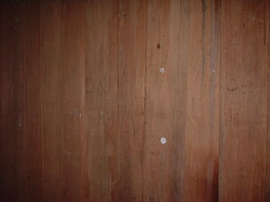

alabat 
/ʔalabat/
n.
“wall”
n.
wall
Wrd.Gloss: wall
Ka seini ne lalag iya sika se dingding te baley eyew kenè ne mahagsil wey eyew meupiya ne eg-uubpaan ka baley.
Meupiya ka alabat ku su warè but-but.
My wall is good because there is no holes.
Eng. wall
Tag. dingdíng
Ceb. dingding
Ilo.: diding
OCM: Miscellaneous Structures (349)
Online dict status: -
Usage level: B
v.
for someone (eg-alabat, mig-alabat/in-alabat, agent, eg><ø-) to put a wall (eg-alabatan, in-alabatan/mig-alabatan/pig-alabatan, location, eg><an-)
Eng. put
Online dict status: -
Usage level: M
v.
for someone (eg-aalabat, mig-aalabat/in-aalabat, agent, eg><ø-rdpCV-) to wall a house (eg-alabatan, in-alabatan/mig-alabatan/pig-alabatan, location, eg><an-) usually with split boards (ig-alabat, in-alabat, theme, ig><ø-)
Ka eg-aalabat iyan ka pegpakapli te minsan nekey eyew egkaringdingan ka seled te baley wey ke leeb naa ne innimu rin. Egkaayun ne minsan nekey ka igpakapli din iling te linas, tabla, dewun te sahing/abaka wey bagyang wey minsan nekey pad ne egkaayun ne igdingding. Egkaayun degma ne igdingding ka me saku, pepil, manggad, playwed wey simintu naa.
Kahiyen ku ne malemu rè ka eg-aalabat kunaleg te mahirap bes.
I thought that walling a house is easy work but rather a hard one.
Eng. wall; build wall
Online dict status: -
Usage level: M
Updated by: RJH,RJH,AAA,TME,RJH,QDL,NJK,RAA,QDL
Last updated: 10/Mar/2014
"alabat" in reader "Hendei kag pamaneyik?"
This page last updated: 03-Jan-2020
Copyright © 2009-2014, Matigsalug Language Christian Association, Inc